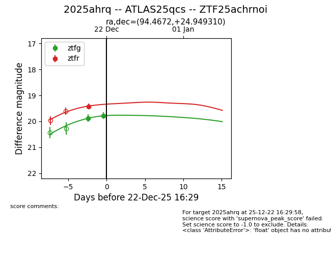
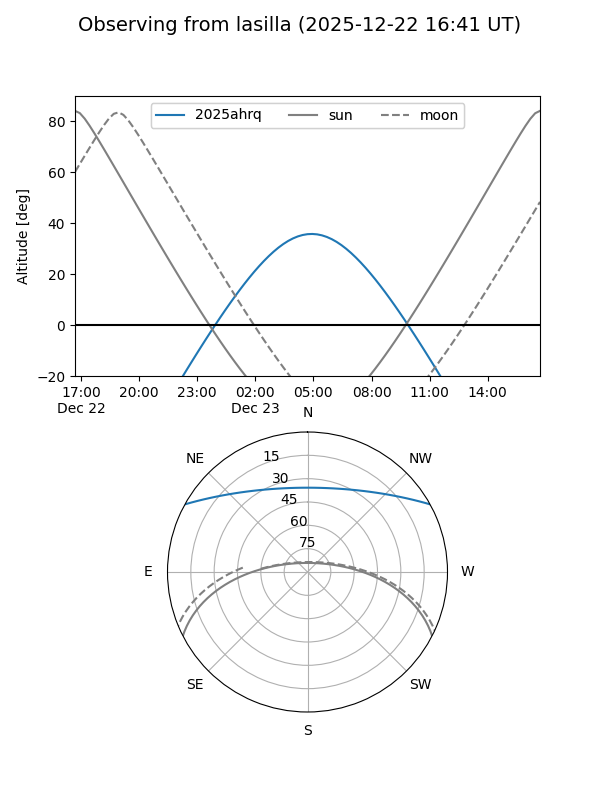
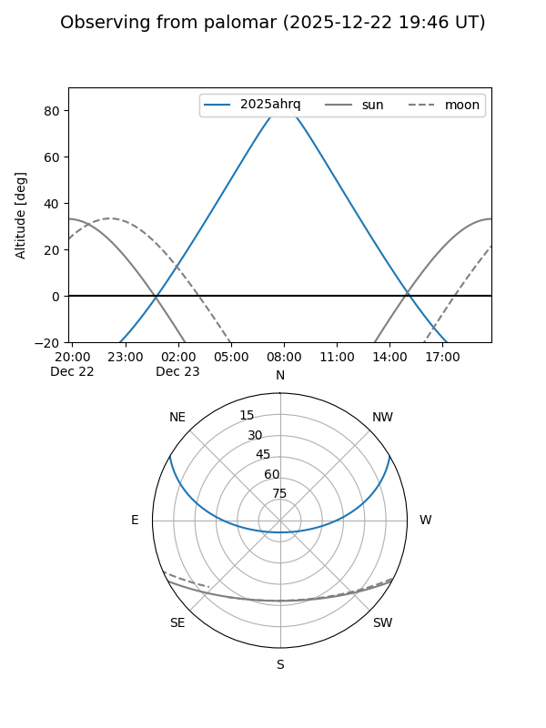
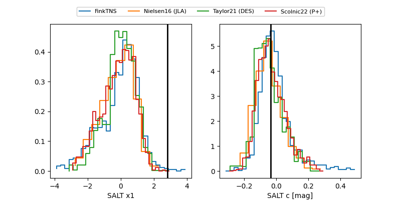

2025ahrq
Target 2025ahrq at 2025-12-22 16:31
Aliases and brokers:
FINK: fink-portal.org/ZTF25achrnoi
Lasair: lasair-ztf.lsst.ac.uk/objects/ZTF25achrnoi
ALeRCE: alerce.online/object/ZTF25achrnoi
TNS: wis-tns.org/object/2025ahrq
YSE: ziggy.ucolick.org/yse/transient_detail/2025ahrq
alt names
ZTF25achrnoi (ztf,fink_ztf)
2025ahrq (tns,yse)
ATLAS25qcs (atlas)
Coordinates:
equatorial (ra, dec) = 94.4672,+24.94931
equatorial (HMS+DMS) = 06:17:52.13,+24:56:57.52
galactic (l, b) = (187.0213,+4.27648)
Flags:
Photometry:
last ztfg=19.78, ztfr=19.42
2 ztfg, 1 ztfr detections
Lightcurve

Visibility


Additional plots
